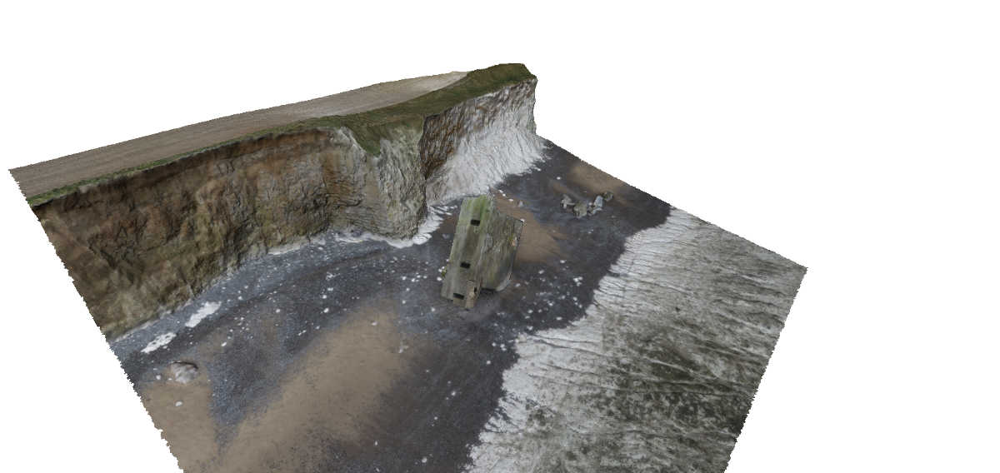
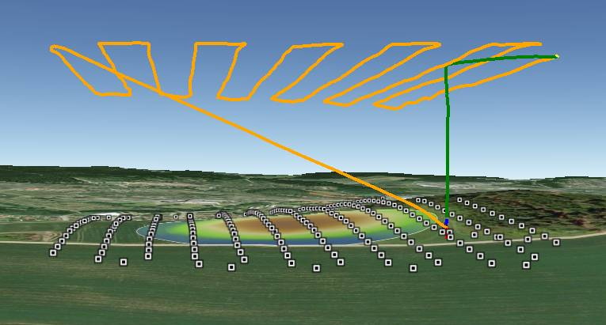
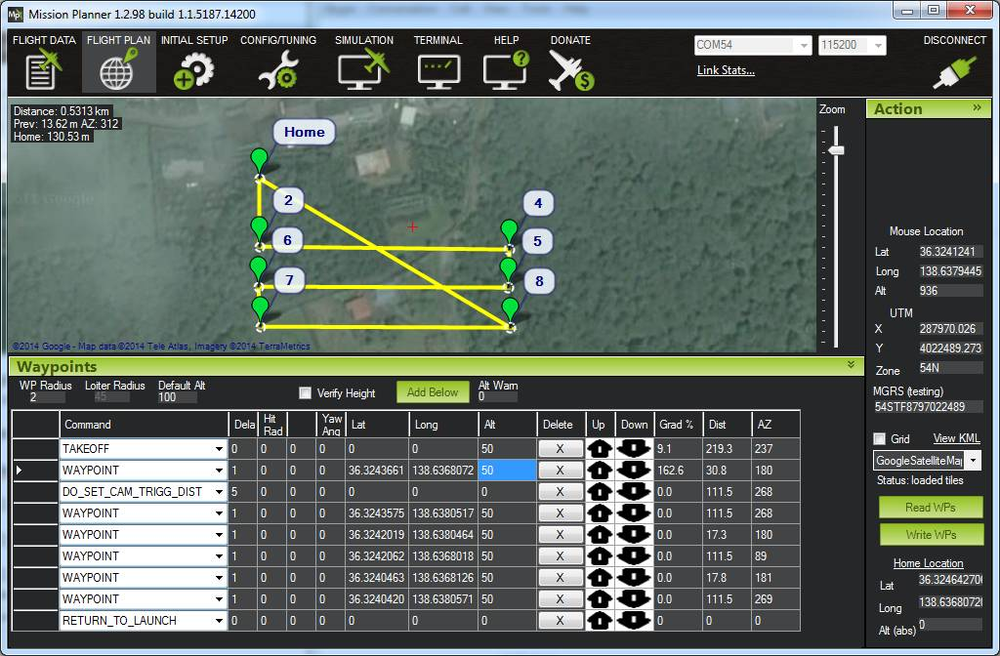

3d Mapping¶
Overview¶
This page introduces how Copter/Plane along with the right equipment can be used to create 3d maps.
The image above is Sylvain’s “the fallen blockhouse” and the winnerof the Feb 2014 T3 competition.
Equipment you will need¶
Plane or Multicopter
A digital still camera:
Canon cameras capable of CHDK including the S100, S110, Elph 110 HS and SX230HS
Other camera types including Canon ELPH 520 HS (not CHDK capable) with some method of triggering the camera shutter
GoPro cameras are not recommended because of their fish-eye lenses
A downward facing gimbal or hard mount to attach a camera to the vehicle.
Sample Mission¶
{kind=link}
A good 3d rendering can be accomplished with 60 ~ 100 still pictures. There should be at least 65% overlap between consecutive pictures but aiming for 80% or even higher is recommended. The aerial photographs can also be combined with photos taken from the ground.
The altitude of the mission depends upon the subject. For large flat areas, flying 40m ~ 80m above the surface should provide very detailed images (and thus a detailed final product) but for buildings flying higher (i.e. 100m above the building) reduces distortion.
It is recommended to fly a mission that is made up of parallel tracks with each track between 25m and 100m apart. The higher the vehicle, the wider apart the tracks can be. In general you should aim for 65% overlap in pictures from adjacent tracks.
The camera shutter needs to be triggered throughout the mission (i.e every 2 to 5 seconds or at regular distance intervals). Many cameras include a feature to take pictures at regular time intervals. Canon cameras loaded with CHDK can run a script that does this. Alternatively Copter/Plane/Rover can trigger a Canon CHDK camera at timed or distance based intervals.
A mission to accomplish this would include some or all of these commands:
TAKEOFF - will cause the vehicle to climb straight to the target altitude provided in the “Alt” column (normally in meters)
WAYPOINT - provide as many waypoints as required to fly over the scene in a grid pattern. Altitude should be entered in the “Alt” column. Adding “1” to the “Delay” columns will cause the copter to momentarily stop at each waypoint.
DO_DIGICAM_CONTROL will cause the camera shutter to be pushed once immediately if the autopilot has been connected using CHDK or a servo. This command takes no arguments and like other “do” commands it executes immediately after the preceding waypoint command begins.
DO_TRIGG_DISTANCE is the same as do-digicam-control (above) except the camera shutter will trigger every X meters. Where X can be defined in the first column labelled “Dist (m)”. Note: in AC3.1.2 there is no mission command to stop the command from running so the shutter will be triggered continuously until the vehicle is switched out of AUTO mode.
RETURN_TO_LAUNCH should be the last command in the mission so the vehicles returns home.
DO_SET_ROI can be used to point the nose of the vehicle and gimbal at a specific point on the map.
{kind=link}
Recommended Desktop 3d mapping software¶
MicMac based toolchain together with (ImageJ/Fiji, QGIS, SAGA GIS): open source and free!
VisualSFM : free for non-commercial use
Agisoft Photscan : $179 for the standard edition, $3,499 for the pro edition including georeferencing, orthopotos, etc
Pix4d : 6500 euros or 260 euros per month
OpenDroneMap : open source and free! (user intro video)
All of these software packages work in generally the same way in that they consume the still images you’ve taken from the vehicle (and you may also choose to add pictures taken by hand from the ground as well) and produce a 3d image (in what format?). This is accomplished by automatically matching up the images, it does not rely upon knowing the actual location from where the image was taken.